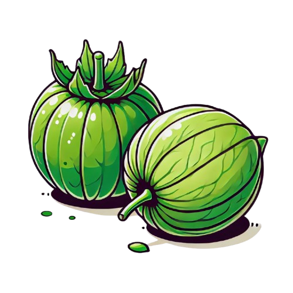
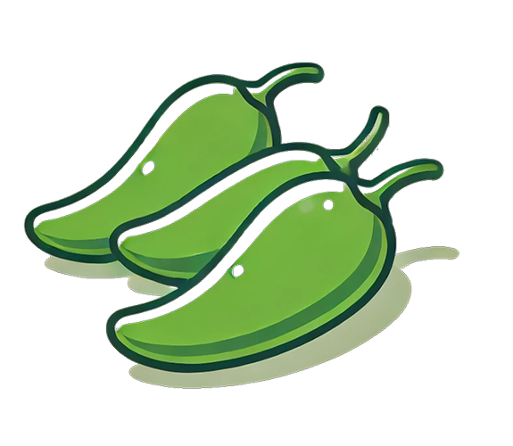

Chilaquiles Verdes

Los chilaquiles mexicanos son un plato típico hecho con totopos (trozos de tortilla fritos o tostados) bañados en salsa verde (o roja), acompañados de queso, crema, cebolla y a veces huevo, pollo o carne.
Ingredientes
Para la salsa verde
- Tomates verdes (tomatillos)
- Chiles serranos o jalapeños (ajusta al gusto)
- Cebolla
- Ajo
- Cilantro fresco
- Caldo de pollo (o agua)
- Sal al gusto
Para los chilaquiles
- Tortillas de maíz
- Aceite vegetal (para freír)
- Salsa verde
- Queso fresco o queso rallado
- Crema
- Pechugas de pollo cocidas y deshebradas (opcional)
- Cebolla en rodajas finas
Receta



Preparación de la salsa
- Hierve los tomates verdes y los chiles en agua durante 5-7 minutos hasta que cambien de color.
- Escurre y licúa con la cebolla, ajo, cilantro y el caldo hasta obtener una mezcla homogénea.
- En una sartén con un poco de aceite caliente, sofríe la salsa durante 5 minutos. Ajusta la sal.
Preparación del plato
- Corta las tortillas en triángulos y fríelas en aceite caliente hasta que estén doradas y crujientes. Escúrrelas en papel absorbente.
- En una sartén grande, calienta la salsa (verde o roja) y añade los totopos. Mezcla bien para que se impregnen, pero sin dejarlos remojar demasiado.
- Sirve en platos y decora con crema, queso, cebolla y, si deseas, pollo deshebrado o huevo frito.